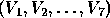

| Irrigation Flow Rates |
The Mishawaka Irrigation company builds custom designed pipeline irrigation systems for farmers and ranchers. One such irrigation system is shown below (it matches the first dataset in the example input, where flow rates are 200, 40 and 74):
For the above example, three wells provide water for the irrigation system and a variety of valve settings are used to control the amount of water that is delivered to each of the three sprinkler systems. Furthermore, the flow of water occurs only in the direction indicated by the arrows. Each valve can be set to the right (in which case all the water is diverted to the right), or to the left (in which case all the water is diverted to the left).
Given a sprinkler system configuration and each well's corresponding flow rate (in gallons/minute), your program should determine, for different valve settings, the output flow rates that are being delivered to each sprinkler systems.
NOTE: You should program for generality (i.e., do not make any assumptions concerning the number of water wells, flow valve settings, or sprinkler heads. Also do not make assumptions about the names of the components).
The input file will consist of multiple data sets; each data set is terminated by an asterisk (*) on a line by itself. Each data set will consist of an irrigation network description (see table 1) followed by one or more flow valve setting records (see table 2). Each flow valve setting record consists of a sequence of L's and R's, one for each valve described in the irrigation network description. The datasets are separated by lines containing only an asterisk (*) in column one.
End of data is marked by a terminal record containing the values of 9999 for #ofWells, #ofSprinklers, and #ofValves.
Table: Input (in table form) for Irrigation Network Description

Table: Input (in table form) for Valve Settings
For each set of valve settings of each irrigation network, your program should output a message of the following form:
Sprinkler #i flow is n gallons/min
Label the output for each irrigation network according to the order in which it was inputted (see the example below). Label the outputs for the valve settings in the order in which they were read in for each irrigation network. See the example for the exact format of the output headings and spacing.
3 3 7 200 40 73 W1 V1 W2 V2 W3 V3 S1 S2 S3 V1 S1 V4 V2 V4 V5 V3 V5 V7 V4 S1 V6 V5 V6 V7 V6 S1 V7 V7 S2 S3 R L R L R L R L R L R L R L * 2 4 5 100 200 WELL1 VALVE1 WELL2 VALVE2 SPR1 SPR2 SPR3 SPR4 VALVE1 VALVE3 VALVE4 VALVE2 VALVE4 VALVE5 VALVE3 SPR1 SPR2 VALVE4 SPR2 SPR3 VALVE5 SPR3 SPR4 R L R L R L L L R L L R L R L * 9999 9999 9999
Irrigation network #1 Valve settings #1 Sprinkler #1 flow is 240 gallons/min Sprinkler #2 flow is 0 gallons/min Sprinkler #3 flow is 73 gallons/min Valve settings #2 Sprinkler #1 flow is 200 gallons/min Sprinkler #2 flow is 113 gallons/min Sprinkler #3 flow is 0 gallons/min Irrigation network #2 Valve settings #1 Sprinkler #1 flow is 0 gallons/min Sprinkler #2 flow is 300 gallons/min Sprinkler #3 flow is 0 gallons/min Sprinkler #4 flow is 0 gallons/min Valve settings #2 Sprinkler #1 flow is 100 gallons/min Sprinkler #2 flow is 0 gallons/min Sprinkler #3 flow is 200 gallons/min Sprinkler #4 flow is 0 gallons/min Valve settings #3 Sprinkler #1 flow is 100 gallons/min Sprinkler #2 flow is 0 gallons/min Sprinkler #3 flow is 200 gallons/min Sprinkler #4 flow is 0 gallons/min